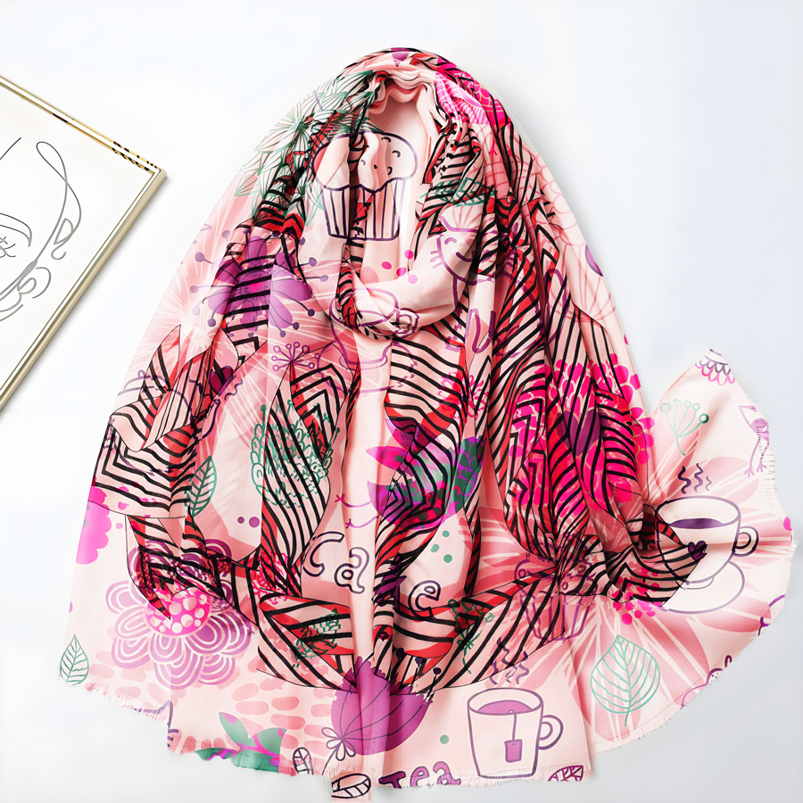

视频教程： https://youtu.be/7xw_a3y56kg
视频中使用的素材：点击下载>> | 备用下载>>
操作步骤：
丝绸选区精修
快速选择工具(W)配合Alt+右键调整笔刷大小（建议初始大小15px）
丝巾边缘处理：选择>修改>平滑（1-2像素）消除锯齿
半透明区域：通道面板复制Alpha通道加强边缘对比度
置换贴图核心技术
高斯模糊参数：半径建议2-3像素（丝绸纹理较细腻）
置换映射：水平/垂直比例5:5测试后再调整（丝绸褶皱较柔和）
混合模式组合：正片叠底（85%）+填充不透明度90%
动态调色系统
- 混合颜色带(Alt+拖动滑块)：
▸ 本图层白色滑块拆分至200/255
▸ 下一图层黑色滑块提升至15
- 色相/饱和度调整：
▸ 着色模式+明度+3（保持丝绸光泽）
▸ 饱和度建议+15~20
曲线调整技巧
创建双锚点S型曲线（中间调提亮/阴影压暗）
蒙版反向(Ctrl+I)后用白色画笔（流量30%）擦出高光区域
技巧：
添加图案层后执行：滤镜>扭曲>波浪（5%幅度）增强自然垂感
最终叠加1%的杂色（单色）消除数字感
环境光吸收：新建柔光层用渐变工具(G)添加光影过渡
以下是给丝巾加图案成品效果
